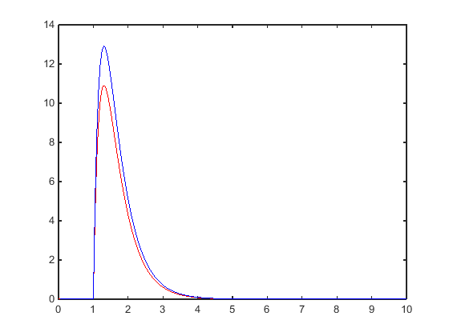
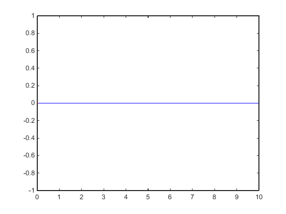

Contents
clear all;
close all;
T = 0.05;
T_obj = 0.001;
Wzm=1.0;
T1=0.5;
T2=0.2;
[ld,md]=c2dm(Wzm,[T1*T2 T1+T2 1],T,'zoh');
b(1)=ld(2);
b(2)=ld(3);
a(1)=md(2);
a(2)=md(3);
[ld_obj,md_obj]=c2dm(Wzm,[T1*T2 T1+T2 1],T_obj,'zoh');
b_obj(1)=ld_obj(2);
b_obj(2)=ld_obj(3);
a_obj(1)=md_obj(2);
a_obj(2)=md_obj(3);
fprintf('a[0][0] = %+.20f;\n',a_obj(1));
fprintf('a[0][1] = %+.20f;\n',a_obj(2));
fprintf('b[0][0][0] = %+.20f;\n',b_obj(1));
fprintf('b[0][0][1] = %+.20f;\n',b_obj(2));
na=length(a); nb=length(b);
kp=5; kk=1000;
u(1:kk)=0;
y(1:kk)=0;
e(1:kk)=0;
z(1:kk)=0;
up(1:kk)=0;
ud(1:kk)=0;
ui(1:kk)=0;
z(kp:kk) = 50;
kr = 3;
ur(1:kr)=0;
yr(1:kr)=0;
er(1:kr)=0;
ko = 150;
uo(1:ko)=0;
yo(1:ko)=0;
eo(1:ko)=0;
while (ko*T_obj<=10);
yo(ko)=0;
for i=1:nb
yo(ko)=yo(ko)+b_obj(i)*uo(ko-i);
end;
for i=1:na
yo(ko)=yo(ko)-a_obj(i)*yo(ko-i);
end;
if((ko-1)*T_obj == 1.0)
yo(ko) = yo(ko)+100*T_obj;
end
uo(ko) = 0;
ko = ko+1;
end;
while (kr*T<=10);
yr(kr)=0;
for i=1:nb
yr(kr)=yr(kr)+b(i)*ur(kr-i);
end;
for i=1:na
yr(kr)=yr(kr)-a(i)*yr(kr-i);
end;
if((kr-1)*T == 1.0)
yr(kr) = yr(kr)+100*T;
end
ur(kr) = 0;
kr = kr+1;
end;
figure;
plot((1:length(yo))*T_obj,yo,'r'); hold on;
plot((1:length(yr))*T,yr,'b')
figure;
stairs((1:length(uo))*T_obj,uo,'r'); hold on;
stairs((1:length(ur))*T,ur,'b')
return
a[0][0] = -1.99301447786001540000;
a[0][1] = +0.99302444293323511000;
b[0][0][0] = +0.00000498834956643098;
b[0][0][1] = +0.00000497672365329382;
 
parametry do wprowadzenia w oscylacje
Ku = 27.0;
Tu = 0.387;
parametry PID wyznaczone na podstawie Z-N z polskiej wikipedii
typ_reg = 'PID';
if strcmp(typ_reg, 'P')
K = 0.5*Ku;
Ti = Inf;
Td = 0;
elseif strcmp(typ_reg, 'PI')
K = Ku/3.2;
Ti = 2.2*Tu;
Td = 0;
elseif strcmp(typ_reg, 'PID')
K = 0.6*Ku;
Ti = 0.5*Tu;
Td = 0.125*Tu;
else
K = 27.0;
Ti = Inf;
Td = 0;
end
for k=kp:kk;
y(k)=0;
for i=1:nb
y(k)=y(k)+b(i)*u(k-i);
end;
for i=1:na
y(k)=y(k)-a(i)*y(k-i);
end;
e(k)=z(k)-y(k);
up(k) = K*e(k);
ui(k) = ui(k-1)+K/Ti*T*(e(k-1)+e(k))/2;
ud(k) = K*Td*(e(k)-e(k-1))/T;
u(k) = up(k)+ud(k)+ui(k);
end;
figure; plot((0:length(y)-1)*T, y);
figure; plot((0:length(u)-1)*T, u);